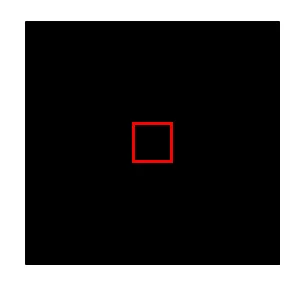
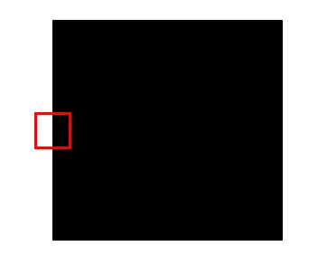
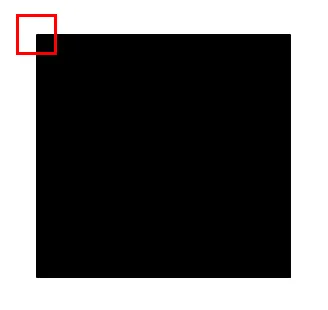
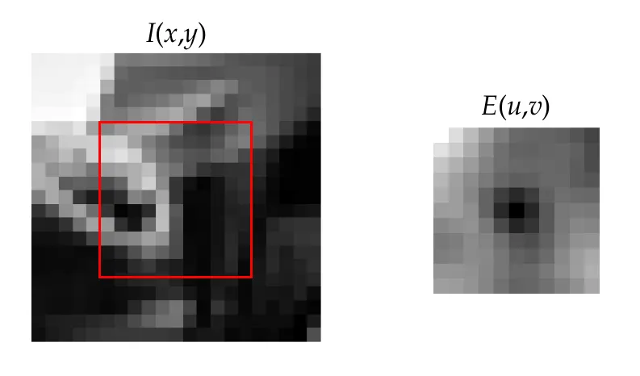
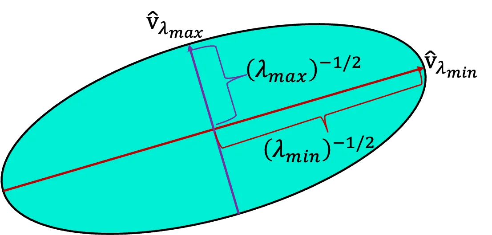
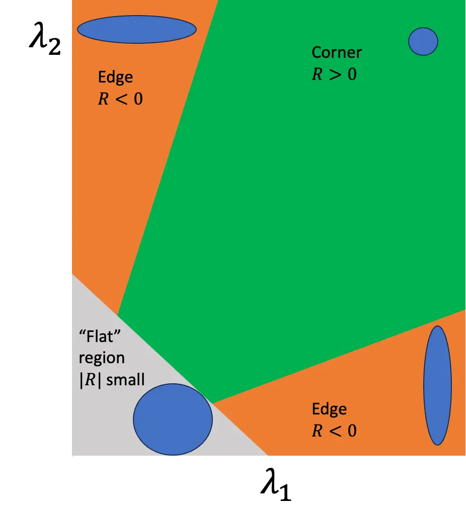
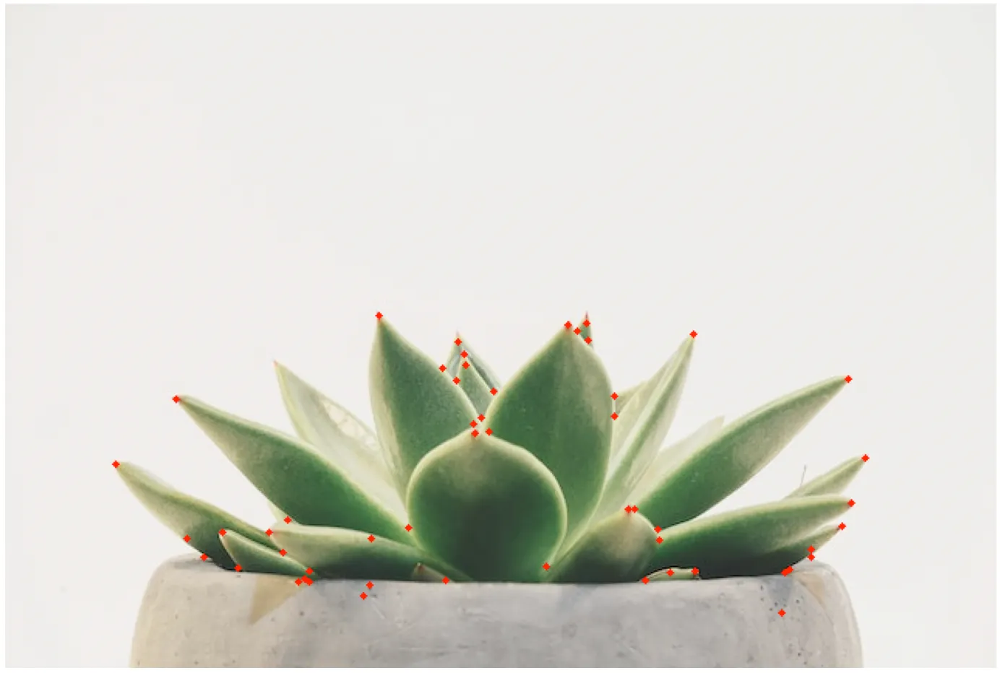

Harris Corners Detector — from Theory to Code
Harris corners detector is a popular algorithm for finding interest points in an image. In this post, we go over the theory and the mathematics behind the algorithm and implement it using Python.
In many computer vision tasks, we need to find some interest points — points in the image we can detect and describe and then use for a task, such as image-stitching and detection.
The first question one should ask is what is a good interest point (also called a feature). We want such a point to be well-defined so we can detect it precisely and repetitively. To get a feeling of what is a good feature point, let’s look at some scenarios in an image. First, we look at a point with similar values around it, like a middle of a black square.

This is not a good feature since we can’t detect it precisely. We can move the red square a little in any direction, and we don’t even know we have moved.
Now, let’s look at an edge:

If the red square moves a little to the right or to the left, we can see something has changed, but if it moves a little up or down, we can’t tell if something has changed. So this is also not a good feature to detect precisely.
What about the corner?

Here any movement of the red square results in some changes inside it. We can say exactly where this point is! Think about it, if I ask you to point to the center of the square, you can only guess where it is and pick some point in the area of the center. But, if I ask you to point to the top left corner, you know exactly where it is. Thus, the corner is a good feature.
What characterizes the corner is that it has gradients (changes) in more than one direction, so it is easy to say if something changes when we move a little.
The Mathematics
We want now to formulate the idea of changes when moving a little bit from a pixel in the image. For that, we introduce the following error function:
\[ E(u, v) = \sum_{x,y} w(x,y) \left[ I(x+u, y+v) - I(x,y) \right]^2 \]
where \(x\) and \(y\) are the pixel’s coordinates, \(u\) and \(v\) are a shift amount, \(I\) is the intensity of the image at some point (the value of a pixel), and \(w\) is a window function. This formula calculates the error we will get if we move the image by \(u\) and \(v\) (inside some window).

In the figure above, you can see that at \(E(0, 0)\) (the center), the value is 0 (perfect black) since there are no changes with a shift of zero, and so the error function got zero. When the shift becomes bigger, the error function gets bigger too.
A corner region should change even for a small shift, so we want to see what happens to the error function for a small shift. For that, we can use the Taylor series. We are going to develop a second-order expansion of the error function, but first, let’s recall how a second-order Taylor series around \(x_0\) looks like
\[ f(x - x_0) \approx f(x_0) + f'(x_0)(x - x_0) + \frac{1}{2} f''(x_0)(x - x_0)^2 \]
for the error function expansion, we set \(x_0 = 0\), so
\[ f(x) \approx f(0) + f'(0)x + \frac{1}{2} f''(0)x^2 \]
but the error function is a two-variable function, so the Taylor series is a little more complicated and can be written in a matrix notation as
\[ E(u, v) \approx E(0,0) + \begin{bmatrix} u & v \end{bmatrix} \begin{bmatrix} E_u(0,0) \\ E_v(0,0) \end{bmatrix} + \frac{1}{2} \begin{bmatrix} u & v \end{bmatrix} \begin{bmatrix} E_{uu}(0,0) & E_{uv}(0,0) \\ E_{uv}(0,0) & E_{vv}(0,0) \end{bmatrix} \begin{bmatrix} u \\ v \end{bmatrix} \]
where the \(u\) and \(v\) subscript mean derivative according to \(u\) and \(v\), respectively (and \(uu\) is the second derivative according to \(u\) and so on). You can expand the expression above and see this is a regular 2-dimensional Taylor series.
Let’s calculate the first derivatives:
\[ \begin{aligned} E_u(u,v) &= \sum_{x,y} 2w(x,y) \left[ I(x+u,y+v) - I(x,y) \right] I_x(x+u,y+v) \\ E_v(u,v) &= \sum_{x,y} 2w(x,y) \left[ I(x+u,y+v) - I(x,y) \right] I_y(x+u,y+v) \end{aligned} \]
Notice that the direction of \(u\) is the same as \(x\), and the direction of \(v\) is the same as \(y\). For the second derivatives:
\[ \begin{aligned} E_{uu}(u,v) &= \sum_{x,y} 2w(x,y) I_x(x+u,y+v) I_x(x+u,y+v) \\ &\quad + \sum_{x,y} 2w(x,y) \left[ I(x+u,y+v) - I(x,y) \right] I_{xx}(x+u,y+v) \end{aligned} \]
and similarly for \(v\)
\[ \begin{aligned} E_{vv}(u,v) &= \sum_{x,y} 2w(x,y) I_y(x+u,y+v) I_y(x+u,y+v) \\ &\quad + \sum_{x,y} 2w(x,y) \left[ I(x+u,y+v) - I(x,y) \right] I_{yy}(x+u,y+v) \end{aligned} \]
and the cross derivative
\[ \begin{aligned} E_{uv}(u,v) &= \sum_{x,y} 2w(x,y) I_y(x+u,y+v) I_x(x+u,y+v) \\ &\quad + \sum_{x,y} 2w(x,y) \left[ I(x+u,y+v) - I(x,y) \right] I_{xy}(x+u,y+v) \end{aligned} \]
Recall now that we evaluate the derivative at \((u, v) = (0, 0)\), so a lot of things are going to vanish.
\[ \begin{aligned} E(0,0) &= 0 \\ E_u(0,0) &= 0 \\ E_v(0,0) &= 0 \\ E_{uu}(0,0) &= \sum_{x,y} 2w(x,y) I_x(x,y) I_x(x,y) \\ E_{vv}(0,0) &= \sum_{x,y} 2w(x,y) I_y(x,y) I_y(x,y) \\ E_{uv}(0,0) &= \sum_{x,y} 2w(x,y) I_y(x,y) I_x(x,y) \end{aligned} \]
Notice there are no more second or cross derivatives of \(I\). Now we can rewrite the equation for the error function as
\[ E(u, v) \approx \begin{bmatrix} u & v \end{bmatrix} \begin{bmatrix} \sum_{x,y} w(x,y) I_x^2(x,y) & \sum_{x,y} w(x,y) I_x(x,y) I_y(x,y) \\ \sum_{x,y} w(x,y) I_x(x,y) I_y(x,y) & \sum_{x,y} w(x,y) I_y^2(x,y) \end{bmatrix} \begin{bmatrix} u \\ v \end{bmatrix} \]
The matrix in the equation above can be written as
\[ M = \sum_{x,y} w(x,y) \begin{bmatrix} I_x^2 & I_x I_y \\ I_x I_y & I_y^2 \end{bmatrix} \]
Now, let’s suppose we can write the matrix \(M\) using the eigen decomposition so
\[ M = P \begin{bmatrix} \lambda_1 & 0 \\ 0 & \lambda_2 \end{bmatrix} P^{-1} \]
where \(\lambda_1\) and \(\lambda_2\) are the eigenvalues of \(M\) and \(P\) is a matrix with eigenvectors as columns
\[ P = \begin{bmatrix} \mathbf{v}_1 & \mathbf{v}_2 \end{bmatrix} \]
We can write the vector \(\mathbf{u} = [u, v]\) using a linear combination of the eigenvectors as
\[ \mathbf{u} = a \mathbf{v}_1 + b \mathbf{v}_2 \]
and recall that if \(\mathbf{v}_1\) is an eigenvector of the matrix \(M\) with eigenvalue \(\lambda_1\), then
\[ M \mathbf{v}_1 = \lambda_1 \mathbf{v}_1 \]
Let’s use all of that in the function of the error.
\[ \begin{aligned} E(u,v) &= \mathbf{u}^T M \mathbf{u} = (a \mathbf{v}_1 + b \mathbf{v}_2)^T M (a \mathbf{v}_1 + b \mathbf{v}_2) \\ &= (a \mathbf{v}_1^T + b \mathbf{v}_2^T)(a \lambda_1 \mathbf{v}_1 + b \lambda_2 \mathbf{v}_2) \\ &= \lambda_1 a^2 + \lambda_2 b^2 \\ &= \frac{a^2}{\left(\lambda_1^{-1/2}\right)^2} + \frac{b^2}{\left(\lambda_2^{-1/2}\right)^2} \end{aligned} \]
We assume the eigenvectors are normalized, and also they are orthogonal (so their dot product is 0). Notice that the last expression is an expression of an ellipse for some constant error. The ellipse axes are according to the direction of the eigenvectors, and their length is according to the eigenvalues. The values of \(a\) and \(b\) are the length in the direction of \(\mathbf{v}_1\) and \(\mathbf{v}_2\) that are needed to reconstruct the vector \(\mathbf{u}\).

The question that arises now is what is the meaning of the result above. Let’s start by assuming both \(\lambda_1\) and \(\lambda_2\) are small numbers. In this case, the axes of the ellipse will be very large. That means we need a big step in any of the eigenvector directions to get a high error, which means that the image is relatively flat (slow changes).
If, on the other hand, \(\lambda_1 \gg \lambda_2\), the axis in \(\mathbf{v}_1\) direction will be much smaller than the one of \(\mathbf{v}_2\). If so, for some error, a little step in \(\mathbf{v}_1\) direction will be sufficient to satisfy the equation, but if we choose to go with the other direction, we need a much bigger step. This is a case of an edge in the image, where one direction causes a little change and so a little error, while the other direction can make a big change with a small shift.
Finally, if \(\lambda_1\) and \(\lambda_2\) are both large and similar in size, the ellipse will be small and with a shape more similar to a circle which implies a significant change in all directions. This is a case of a corner.
The calculation of the eigenvalues can be expensive, but since we are interested in the relation between the eigenvalues, we don’t actually need to compute them. Instead, recall that the determinant of a matrix is the multiplication of the eigenvalues, and the trace (sum of the elements on the diagonal) is the sum of the eigenvalues. So, instead of getting the eigenvalues themselves, we can calculate another number — \(R.\)
\[ R = \text{det}(M) - \alpha \text{trace}(M)^2 = \lambda_1 \lambda_2 - \alpha (\lambda_1 + \lambda_2)^2 \]
where \(\alpha\) is a constant between 0.04 and 0.06 found empirically. If both eigenvalues are large, the value of \(R\) will be large, and it’s a corner. If just one of the eigenvalues is large, the result of \(R\) will be a large negative value. And, if the magnitude of \(R\) is small, this is the case of a “flat” region where the eigenvalues are small numbers.

Harris Corners Detector Algorithm
The algorithm for detecting corners is as follows:
- Convert the image into a gray-scale image
- Apply Gaussian blurring to reduce noise
- Take derivatives in both \(x\) and \(y\) directions for each pixel
- Compute the \(M\) matrix using a window around each pixel
- Compute \(R\)
- Threshold \(R\)
- For accurate localization, one can add non-maximum suppression
Coding It
Let’s write a simple code to find corners and mark them with red circles. First, we import the necessary modules
import numpy as np
from numpy.linalg import det
import matplotlib.pyplot as plt
import cv2 # OpenCVWe define a function for non-maximum suppression
def non_maximum_suppression(matrix, kernel_size=5):
kernel = cv2.getStructuringElement(cv2.MORPH_RECT, (kernel_size, kernel_size)) # rectangular kernel
maxed_matrix = cv2.dilate(matrix, kernel) # get maximum value in the window for each pixel
non_maximum_suppression_matrix = matrix.copy()
non_maximum_suppression_matrix[matrix != maxed_matrix] = 0 # set to 0 pixel originally are not local maxima
return non_maximum_suppression_matrixAnd implement a function for the Harris detector algorithm
def corner_detector(image, window_size, k, threshold):
image_copy = image.copy() # get copy of the image so the original one won't be changed
height = image.shape[0]
width = image.shape[1]
# step 1: convert to gray-scale
gray_image = cv2.cvtColor(image, cv2.COLOR_BGR2GRAY)
# step 2: reduce noise using Gaussian blurring
image_blurred = cv2.GaussianBlur(gray_image, (3, 3), 0)
# step 3: get the derivatives using Sobel operator
Ix = cv2.Sobel(image_blurred, cv2.CV_64F, 1, 0, ksize=3)
Iy = cv2.Sobel(image_blurred, cv2.CV_64F, 0, 1, ksize=3)
# compute the basic components of the M matrix
IxIx = Ix ** 2
IyIy = Iy ** 2
IxIy = Ix * Iy
offset = window_size // 2 # offset from the edge of the image so the all window will be inside the image
image_R_matrix = np.zeros((height, width))
# go over each pixel
for y in range(offset, height - offset):
for x in range(offset, width - offset):
# step 4: compute the element of the M matrix
M_00 = np.sum(IxIx[y-offset:y+offset+1, x-offset:x+offset+1])
M_11 = np.sum(IyIy[y-offset:y+offset+1, x-offset:x+offset+1])
M_01 = np.sum(IxIy[y-offset:y+offset+1, x-offset:x+offset+1])
M = np.array([[M_00, M_01], [M_01, M_11]])
# step 5: compute R
R = det(M) - k * (np.trace(M) ** 2)
image_R_matrix[y, x] = R
# normalize the values of Rs to be between 0 and 1
cv2.normalize(image_R_matrix, image_R_matrix, alpha=0, beta=1, norm_type=cv2.NORM_MINMAX)
# step 6: thresholding R
is_corner = image_R_matrix > threshold
image_R_matrix[~is_corner] = 0
# step 7: apply non-maximum suppression
image_R_matrix = non_maximum_suppression(image_R_matrix)
# draw circle around the corners
for y in range(offset, height - offset):
for x in range(offset, width - offset):
if image_R_matrix[y, x] != 0:
cv2.circle(image_copy, (x, y), 1, (0, 0, 255), -1)
return image_copyAnd we can use the code with
image = cv2.imread('./im.jpg')
corner_image = corner_detector(image, 5, 0.04, 0.24)
plt.imshow(corner_image[:, :, ::-1])
plt.show()and the final result:
